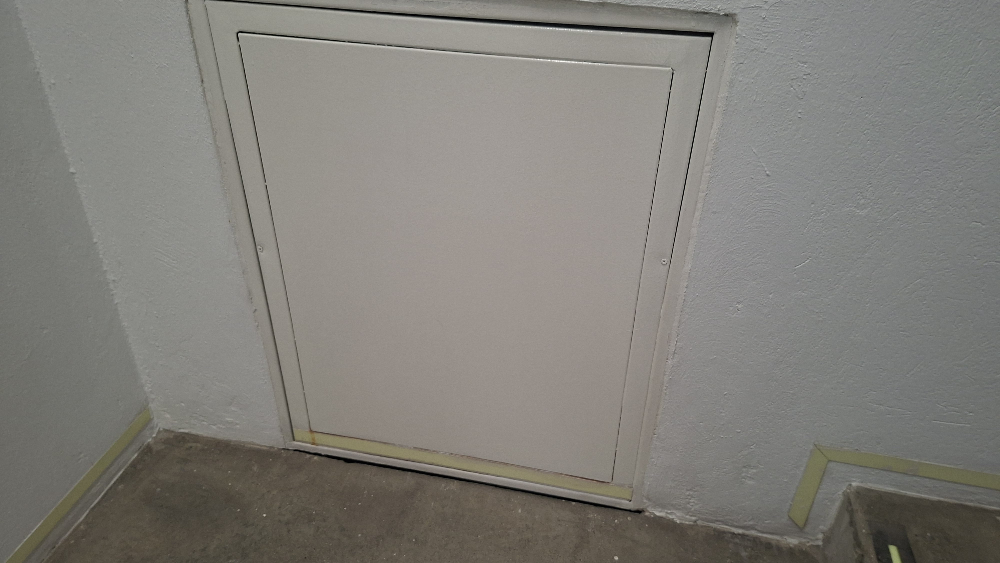

El ducto de ventilación del edificio Tx fue el lugar donde se encontraron la mayor cantidad de evidencias del crimen.
El personal de limpieza notó que el ducto contenía restos de sangre y otros elementos relacionados con el crimen.
Al ser investigado, se encontraron más partes del cuerpo en el ducto.
